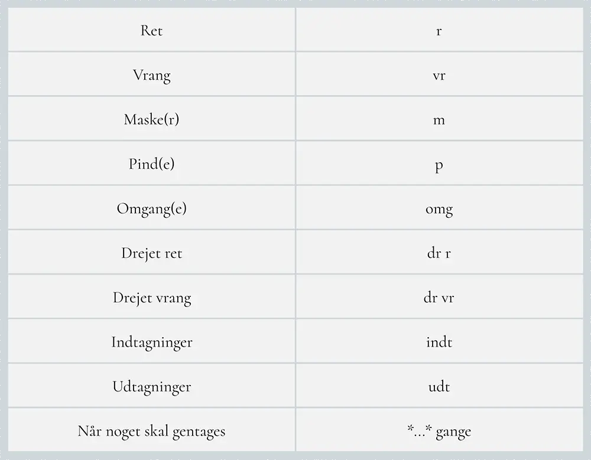

Strikkeguide
Step by step
☰
FORSIDE
STEPS
STEP 1 - VALG AF OPSKRIFT
STEP 2 - INDKØB AF GARN OG REDSKABER
STEP 3 - LAV EN STRIKKEPRØVE
STEP 4 - FØLG OPSKRIFTEN
STEP 5 - TILLYKKE, DU ER FÆRDIG!
GUIDES
GARN ALTERNATIVER
BASISSTRIK
VASK AF STRIK
INSPIRATION
Basisstrik
SLÅ MASKER OP:
STRIK RET:
STRIK VRANG:
LUK MASKER AF:
STRIKKEFORKORTELSER:

Til toppen